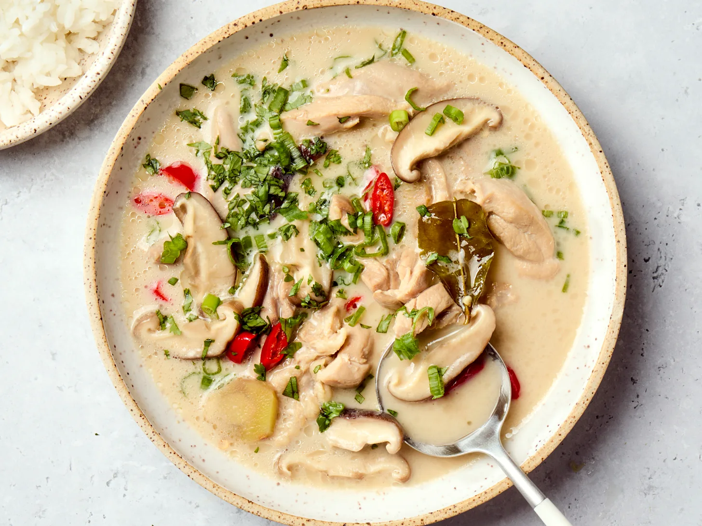

Thai Soup
credit: thekitchn

Description
This deceptively simple dish is a comforting hug in a bowl, and is really perfect for any occasion.
Had a bad day? Make a pot of tom kha gai. Had a good day? Great occasion for tom kha gai.
Feeling sick? Tom kha gai to the rescue. Need an easy, weeknight dinner? Make this soup.
Want an impressive main for a dinner party? I think you already know the answer.
Ingredients
- Galangal: The ‘kha’ in Tom Kha Gai translates to galangal, which really is the foundation of this coconut soup. Commonly mistaken for ginger, galangal is a rhizome (like ginger) but they are two entirely different plants. Galangal is a bit more peppery and earthy compared with ginger.
- Coconut milk: The creamy nature of this soup is all from the coconut milk. It’s important to use a full-fat coconut milk for this recipe to get the most out of its flavor. Pro tip: Look at the ingredient list of your coconut milk and make sure that coconut is listed as the first ingredient, not coconut extracts.
- Lemongrass: Incredibly aromatic lemongrass imparts a zesty, citrusy, and earthy flavor to the broth.
- Makrut lime leaves: Used similarly to bay and curry leaves, makrut lime leaves add a bold, citrusy flavor with subtle floral notes to the broth.
- Fish sauce: In lieu of table salt, the broth gets its strong savory-salty flavor from a hefty dose of fish sauce. I personally use Thai-style Squid brand because it’s harvested much more potent than other varieties, but lighter versions (like Vietnamese fish sauce) also work great.
Steps
- Cook the chicken in chicken broth and coconut milk. Pour the chicken broth and coconut milk to a large saucepan over medium-high heat and cook until the chicken is fork-tender.
- Add the aromatics. Lemongrass, galangal, makrut lime leaves give the broth its savory-complex flavor. Smash the lemongrass and galangal a bit before adding to get the most out of its flavor. Let them cook in the broth for at least 10 minutes so the broth can absorb all its flavor.
- Season with aromatics and cook the mushrooms until tender. Add mushrooms, fish sauce, and sugar and cook mushrooms until they soften, about 5 minutes.
- Season with lime juice and bird’s eye chilies and serve. Add the lime juice, bird’s eye chilies and mix until combined. Garnish with cilantro and scallions if desired.
Back to Home